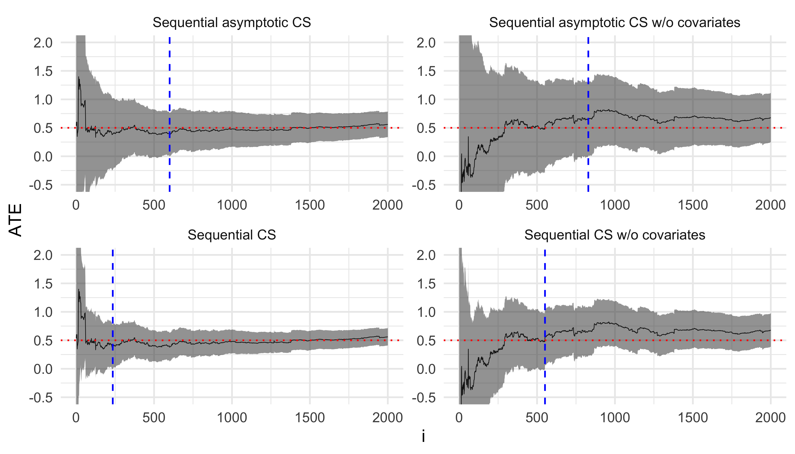

Show the code
library(dplyr)
library(ggplot2)
library(slider)Investigating the methods described in Anytime-Valid Linear Models and Regression Adjusted Causal Inference in Randomized Experiments by Lindon, et al. via simulations.
February 21, 2025
Randomized experiments (A/B tests) are ubiquitous in both academia and the tech sector. Randomization allows us to perform robust causal inference on the impact of interventions on user/participant outcomes. In particular, under randomization, a variety of estimators give us valid and robust inference on the average treatment effect (ATE), \(E[Y_i(1) - Y_i(0)].\) Many common tests for statistically significant differences between the ATE and some pre-specified baseline (most commonly 0) give theoretical guarantees on Type 1 error control. That is, \(\sup_{h \in H_0} \mathbb{P}(\text{rejects } H_0 | H_0) <= \alpha\) where \(\alpha\) is the significance level (commonly set to \(\alpha=0.5\)).
## Simulate RCT with ATE of 0.5
draw <- function(arm, ate = 2.0, sigma = 1.0) {
covar_coef <- c(2, 1.2, 0.4)
covar <- rbinom(3, size = 1, prob = c(0.1, 0.5, 0.9))
y <- 0.5 + ate*arm + drop(covar_coef %*% covar) + rnorm(1, 0, sigma)
cbind(data.frame("y" = y, "t" = arm), data.frame(t(covar)))
}
compare <- function(model, unadjusted_model, data, iter, ate = 2.0) {
seq_f <- sequential_f_cs(model, phi = 10)
seq_f_unadjusted <- sequential_f_cs(unadjusted_model, phi = 10)
seq_asymp <- ate_cs_asymp(model, treat_name = "t", lambda = 100)
seq_asymp_unadjusted <- ate_cs_asymp(
unadjusted_model,
lambda = 100,
treat_name = "t"
)
comparison_df <- data.frame(
"i" = iter,
"method" = c(
"f_test",
"f_test_unadj",
"asymp",
"asymp_unadj"
# "lm",
# "lm_unadj"
),
"estimate" = c(
subset(seq_f, covariate == "t")$estimate,
subset(seq_f_unadjusted, covariate == "t")$estimate,
seq_asymp$estimate,
seq_asymp_unadjusted$estimate
# coef(model)[["t"]],
# coef(unadjusted_model)[["t"]]
),
"lower" = c(
subset(seq_f, covariate == "t")$cs_lower,
subset(seq_f_unadjusted, covariate == "t")$cs_lower,
seq_asymp$cs_lower,
seq_asymp_unadjusted$cs_lower
# confint(model)["t", ][[1]],
# confint(unadjusted_model)["t", ][[1]]
),
"upper" = c(
subset(seq_f, covariate == "t")$cs_upper,
subset(seq_f_unadjusted, covariate == "t")$cs_upper,
seq_asymp$cs_upper,
seq_asymp_unadjusted$cs_upper
# confint(model)["t", ][[2]],
# confint(unadjusted_model)["t", ][[2]]
)
)
comparison_df$covered <- (
comparison_df$lower <= ate & ate <= comparison_df$upper
)
return(comparison_df)
}
simulate <- function(model_fn, model_unadj_fn, draw_fn, n, ate) {
# Warm-start with 20 observations so that no regression coefs are NA
# at any point
df <- do.call(rbind, lapply(1:20, function(x) draw_fn(ate)))
estimates <- data.frame()
for (i in 1:n) {
observation <- draw_fn(ate)
df <- rbind(df, observation)
model <- model_fn(df)
unadjusted_model <- model_unadj_fn(df)
estimates <- rbind(
estimates,
compare(model, unadjusted_model, df, iter = i, ate = ate)
)
}
estimates <- estimates |>
mutate(
stat_sig = 0 < lower | 0 > upper,
method = case_when(
method == "asymp" ~ "Sequential asymptotic CS",
method == "asymp_unadj" ~ "Sequential asymptotic CS w/o covariates",
method == "f_test" ~ "Sequential CS",
method == "f_test_unadj" ~ "Sequential CS w/o covariates",
method == "lm" ~ "Fixed-N CS",
method == "lm_unadj" ~ "Fixed-N CS w/o covariates"
)
) |>
group_by(method) |>
mutate(transition = (!lag(stat_sig, default = FALSE)) & stat_sig) |>
mutate(
stat_sig_i_min = if_else(
any(stat_sig & !lag(stat_sig, default = FALSE)),
min(i[stat_sig & !lag(stat_sig, default = FALSE)]),
NA_integer_
),
stat_sig_i_max = if_else(
any(transition),
max(i[transition]),
NA_integer_
)
) |>
ungroup()
return(estimates)
}
# Simulation estimates
estimates <- simulate(
model_fn = function(data) lm(y ~ ., data),
model_unadj_fn = function(data) lm(y ~ t, data),
draw_fn = function(ate) draw(rbinom(1, 1, 0.5), ate = ate),
n = 500,
ate = 0.5
)
# Compare F-test CSs and Asymptotic CSs
ggplot(estimates, aes(x = i, y = estimate, ymin = lower, ymax = upper)) +
geom_line(size = 0.2) +
geom_ribbon(alpha = 0.5) +
geom_hline(yintercept = 0.5, linetype = "dotted", color = "red") +
geom_vline(aes(xintercept = stat_sig_i_max), linetype = "dashed", color = "blue") +
facet_wrap(
~ method,
ncol = 2,
scales = "free",
) +
coord_cartesian(ylim = c(-0.5, 2)) +
labs(y = "ATE") +
theme_minimal()And we can check the empirical coverage; that is, the fraction of CSs that contain the true ATE.
draw_prop <- function(ate = 2.0, sigma = 1.0) {
prop_covar_coef <- c(0.5, 0.3, 0.1)
prop_covar <- rbinom(3, size = 1, prob = c(0.1, 0.4, 0.7))
prop <- drop(prop_covar_coef %*% prop_covar) + 0.05
covar_coef <- c(3, 2, 1)
covar <- rbinom(3, size = 1, prob = c(0.25, 0.5, 0.75))
arm <- rbinom(1, 1, prop)
y <- (
0.5
+ ate*arm
+ drop(covar_coef %*% covar)
+ drop(prop_covar_coef %*% prop_covar)
+ rnorm(1, 0, sigma)
)
cbind(data.frame("y" = y, "t" = arm, "p" = ifelse(arm, prop, 1 - prop)), data.frame(t(covar)))
}
# Simulation estimates
estimates <- simulate(
model_fn = function(data) lm(y ~ . - p, data, weights = 1/data$p),
model_unadj_fn = function(data) lm(y ~ t, data, weights = 1/data$p),
draw_fn = function(ate) draw_prop(ate = ate),
n = 2000,
ate = 0.5
)
ggplot(
estimates,
aes(x = i, y = estimate, ymin = lower, ymax = upper)
) +
geom_line(size = 0.2) +
geom_ribbon(alpha = 0.5) +
geom_hline(yintercept = 0.5, linetype = "dotted", color = "red") +
geom_vline(aes(xintercept = stat_sig_i_max), linetype = "dashed", color = "blue") +
facet_wrap(
~ method,
ncol = 2,
scales = "free",
) +
coord_cartesian(ylim = c(-0.5, 2)) +
labs(y = "ATE") +
theme_minimal()
Again; empirical coverage: